Fantasy Moot
Fantasy Moot puts you at the lectern on the cases that changed American law. No brief to upload and nothing to prepare—pick a case, read the background, and argue it against virtual versions of the justices who actually heard it.
You face the same pressure the real advocates faced: a hot bench, a hostile procedural posture, and questions drawn from the judicial philosophy of each justice on the panel. While the outcome of these cases seem obvious today, the attorneys arguing them often faced uphill battles.
-

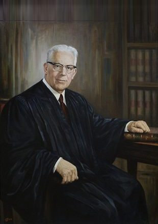
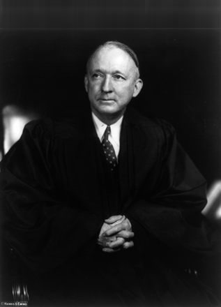
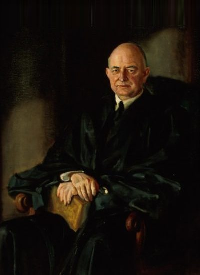
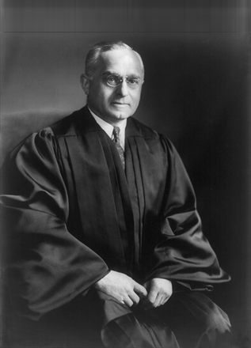
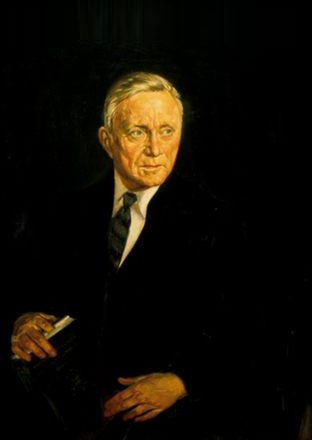
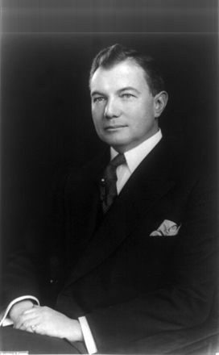
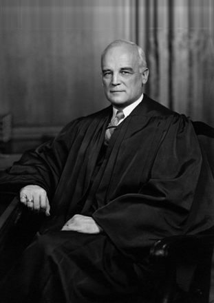
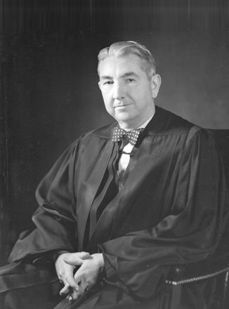
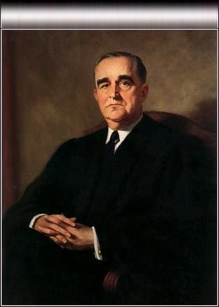
Brown v. Board of Education of Topeka
Are separate public schools, equal in every measurable respect, still a violation of the Equal Protection Clause?
- Argued
- Dec. 9, 1952; reargued Dec. 8, 1953
- Vote
- 9–0
- Opinion
- Chief Justice Earl Warren
- Counsel
- See the full roster below
Brown consolidated four school-segregation appeals—from Kansas, South Carolina, Virginia and Delaware—brought by the NAACP Legal Defense and Educational Fund. A companion case from the District of Columbia, Bolling v. Sharpe, was decided the same day under the Fifth Amendment because the Fourteenth does not reach the federal government.
Who argued it
- Brown (Kansas)
- Robert L. Carter for the appellants; Paul E. Wilson, Assistant Attorney General, for the State
- Briggs (South Carolina)
- Thurgood Marshall for the appellants; John W. Davis for the State
- Davis (Virginia)
- Spottswood W. Robinson III and Oliver W. Hill for the appellants; T. Justin Moore and J. Lindsay Almond Jr. for the State
- Gebhart (Delaware)
- Jack Greenberg and Louis L. Redding for the plaintiffs; H. Albert Young, Attorney General, for the State
- Bolling (District of Columbia)
- George E. C. Hayes and James M. Nabrit Jr. for the petitioners; Milton D. Korman for the District
- United States
- J. Lee Rankin, Assistant Attorney General, as amicus at reargument
Constance Baker Motley, William T. Coleman Jr., Charles L. Black Jr., William R. Ming Jr., Loren Miller and Louis H. Pollak were among the many who worked the record and the briefs without arguing.
The difficulty was Plessy v. Ferguson. For fifty-eight years "separate but equal" had been settled law, and the states had an answer ready for the obvious argument: make the facilities equal and the constitutional problem disappears. Worse, in Gong Lum v. Rice (1927) the Court had already applied that rule to public schools specifically, upholding Mississippi's exclusion of Martha Lum, a Chinese-American student, from the white school. So the segregation of schoolchildren was not an open question the advocates could walk into—it was settled ground they had to take back.
The Fund had spent years building toward this. In Sweatt v. Painter (1950) the Court ordered Heman Sweatt admitted to the University of Texas law school, holding that the separate school Texas had improvised could not match it on the intangibles—faculty reputation, alumni influence, prestige, "the traditions and prestige" that make a law school. The same day, in McLaurin v. Oklahoma State Regents, it struck down the roped-off desk, the separate library table and the segregated cafeteria seat that Oklahoma had imposed on George McLaurin after admitting him, because those restrictions impaired his ability to study and exchange views with other students.
Both were unanimous. Neither touched Plessy. That was the trap: the Court kept finding ways to rule for the plaintiff on the facts, and the Kansas district court had found Topeka's Black and white schools substantially equal in buildings, transport, curriculum and teacher qualifications. There was no factual inequality left to win on. Counsel had to persuade the Court that separation itself inflicted the injury, and they leaned on social-science evidence—including Kenneth and Mamie Clark's doll studies—to prove it. Across the lectern in the South Carolina case stood John W. Davis, a former Solicitor General arguing his 140th case before the Court.
After the first argument the Court could not reach consensus and ordered reargument on two questions: what the framers of the Fourteenth Amendment understood it to do about school segregation, and what remedy a court could realistically order. Chief Justice Fred Vinson died before reargument. Earl Warren took his seat and delivered a unanimous Court, holding that "separate educational facilities are inherently unequal." The remedy came a year later in Brown II, with its famously elastic instruction to proceed "with all deliberate speed."
You can read the actual transcript here, or read the Brief for the Appellants (PDF). Do you think you can do better? Let's find out!
Argue the Case -
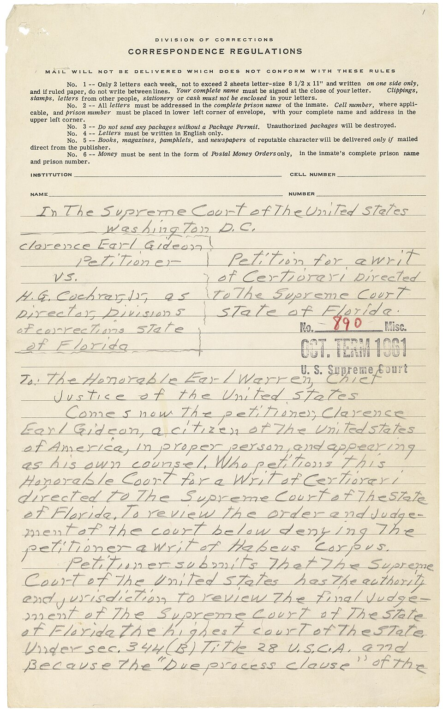
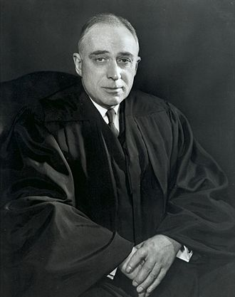

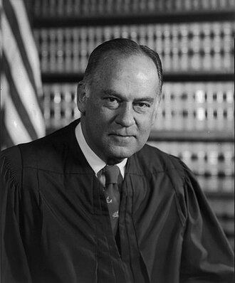

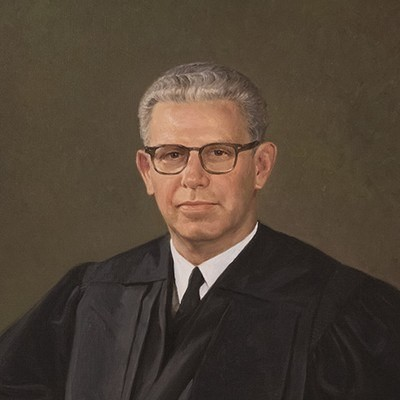
Gideon v. Wainwright
Must a state provide a lawyer to a defendant too poor to hire one, in an ordinary felony case?
- Argued
- January 15, 1963
- Vote
- 9–0
- Opinion
- Justice Hugo Black
- Counsel
- Abe Fortas for Gideon
Clarence Earl Gideon was charged with breaking into the Bay Harbor Poolroom in Panama City, Florida, and making off with a little change and a few bottles. He asked the trial court to appoint a lawyer; Florida furnished counsel only in capital cases, so the judge refused. Gideon defended himself as best he could, lost, and drew five years. From a cell in the Florida State Prison he printed a petition in pencil on lined prison stationery and mailed it to the Supreme Court in forma pauperis. The Court had been waiting for a case just like it: it granted review and—in a matter then styled Gideon v. Cochran—appointed Abe Fortas, a future Justice, to argue for him.
Who argued it
- For Gideon
- Abe Fortas of Arnold, Fortas & Porter, appointed by the Court, with Abe Krash and a Yale law student named John Hart Ely on the briefs
- For Florida
- Bruce R. Jacob, Assistant Attorney General of Florida
The wall in front of Fortas was Betts v. Brady (1942), which held that a state had to appoint counsel only where some "special circumstance"—the defendant's youth, illiteracy, or the complexity of the charge—made a fair trial impossible without one. Gideon was a competent adult tried for an ordinary felony; he had no special circumstance to point to. That was exactly the point. The case could not be won by fitting Gideon into an exception to Betts; it had to be won by persuading the Court that Betts was wrong the day it was decided. The Court had already required counsel in capital cases in Powell v. Alabama (1932) and in every federal felony in Johnson v. Zerbst (1938)—Betts was the outlier holding the line in state court.
Florida overplayed its hand. When it invited other states to join it as amici, twenty-three states filed on Gideon's side instead, urging the Court to bury Betts. The decision was unanimous. Justice Black—who had dissented in Betts twenty-one years earlier—wrote that "any person haled into court, who is too poor to hire a lawyer, cannot be assured a fair trial unless counsel is provided for him." Gideon was retried in Panama City with a local lawyer, W. Fred Turner, beside him, and the jury acquitted him.
You can listen to the argument here, or read the Brief for the Petitioner (PDF). Do you think you can do better? Let's find out!
Argue the Case -
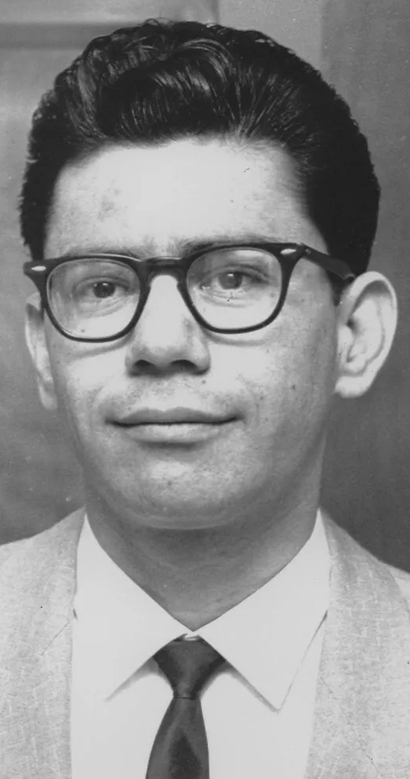
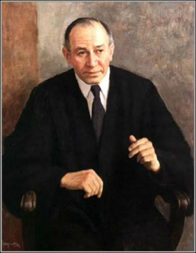
Miranda v. Arizona
What must police tell a suspect in custody before questioning him, and what happens to the confession if they don't?
- Argued
- Feb. 28 – Mar. 1, 1966
- Vote
- 5–4
- Opinion
- Chief Justice Earl Warren
- Dissent
- Clark; Harlan, joined by Stewart and White
Phoenix police arrested Ernesto Miranda in 1963 and questioned him for two hours until he signed a confession to kidnapping and rape. No one told him he could stay silent or have a lawyer present; the typed form he signed carried a printed clause reciting that the statement was made voluntarily and "with full knowledge of my legal rights." The Court heard his case with three companions—Vignera v. New York, Westover v. United States, and California v. Stewart—all turning on what happens in the interrogation room once the door closes.
Who argued it
- For Miranda
- John J. Flynn of Lewis & Roca, Phoenix, serving without fee alongside his partner John P. Frank
- For Arizona
- Gary K. Nelson, Assistant Attorney General of Arizona
- For the United States
- Solicitor General Thurgood Marshall, as amicus, in the companion Westover case
For thirty years the admissibility of a confession had turned on "voluntariness"—a case-by-case look at the totality of the circumstances that ran from Brown v. Mississippi (1936) through Spano v. New York (1959). Two recent decisions had shifted the ground beneath it: Malloy v. Hogan (1964) applied the Fifth Amendment privilege against self-incrimination to the states, and Escobedo v. Illinois (1964) found a right to counsel during interrogation. Flynn's task was to turn that momentum into a rule the police could actually follow—to trade the murky voluntariness inquiry for a bright line drawn before questioning ever begins.
This is the hardest bench on the list. The Court divided five to four, and the questioning bore down on the cost: whether the Constitution really compels a spoken script, and what such a rule would do to ordinary police work. Chief Justice Warren, himself a former district attorney, wrote for the majority that custodial interrogation is inherently coercive and that a suspect must therefore be warned—of the right to silence, that anything said can be used against him, and of the right to counsel, appointed if he cannot afford one. Justices Clark, Harlan, Stewart, and White dissented, warning that the Court was legislating. Miranda himself was retried without the confession and convicted on other evidence.
You can listen to the argument here. Do you think you can do better? Let's find out!
Argue the Case -
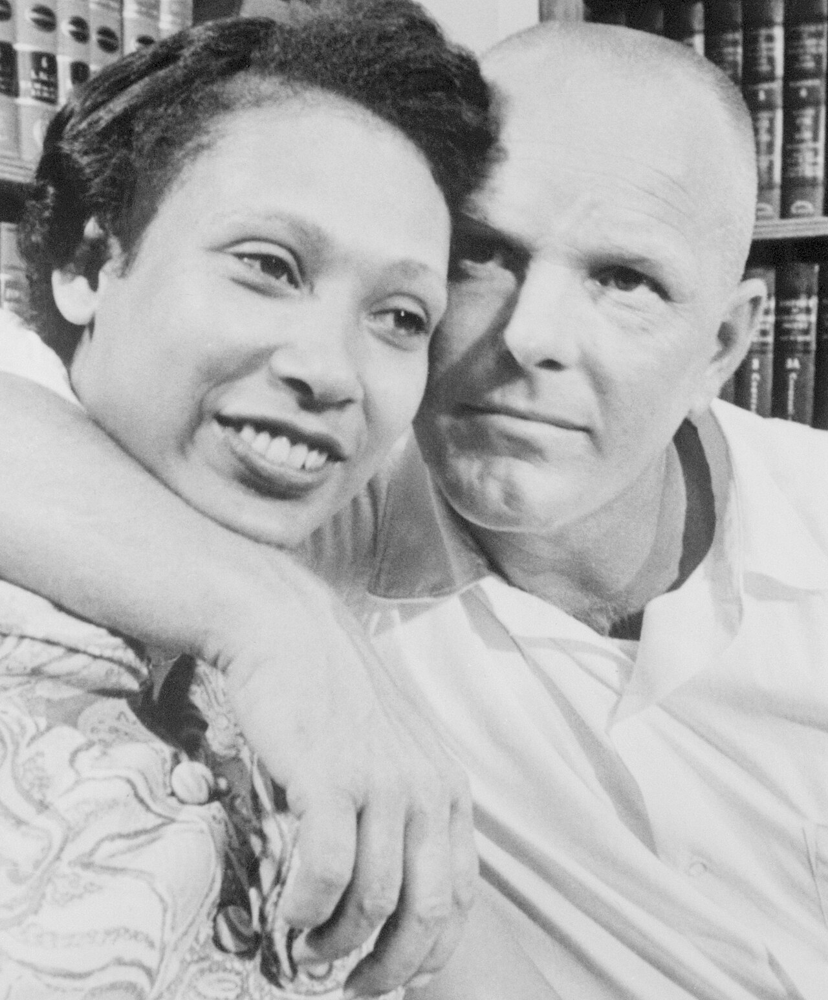
Loving v. Virginia
May a state make it a crime for two of its residents to marry because of their races?
- Argued
- April 10, 1967
- Vote
- 9–0
- Opinion
- Chief Justice Earl Warren
- Counsel
- Bernard Cohen & Philip Hirschkop
Richard Loving, a white bricklayer, and Mildred Jeter, a woman of Black and Native American descent, married in Washington, D.C. in June 1958 and came home to Central Point, Caroline County, Virginia. Weeks later, sheriff's deputies acting on a tip walked into their bedroom in the middle of the night and arrested them—Virginia's Racial Integrity Act of 1924 made their marriage a felony. They pleaded guilty, and Judge Leon Bazile suspended a one-year sentence on the condition that they leave Virginia and not return together for twenty-five years. In 1963 Mildred wrote to Attorney General Robert Kennedy, who referred her to the ACLU.
Who argued it
- For the Lovings
- Bernard S. Cohen and Philip J. Hirschkop, ACLU volunteer cooperating attorneys, who divided the argument between them
- For Virginia
- Robert D. McIlwaine III, Assistant Attorney General of Virginia
- Amicus
- William M. Marutani for the Japanese American Citizens League, supporting the Lovings
Virginia's defense was symmetry. Because the statute punished the white and the non-white spouse with identical penalties, the State argued, it discriminated against no one—the very theory the Court had blessed in Pace v. Alabama (1883). That "equal application" argument had real force and had to be met head-on. Nor was recent history encouraging: a decade earlier, in Naim v. Naim (1955), the Court had ducked an identical challenge to avoid inflaming resistance to Brown, and as recently as McLaughlin v. Florida (1964) it had struck down an interracial-cohabitation law while pointedly declining to reach the marriage ban itself.
Cohen and Hirschkop asked the Court to finish what McLaughlin had started, and it did—unanimously. Chief Justice Warren rejected the equal-application theory outright, holding that classifications drawn by race demand "the most rigid scrutiny" and that Virginia's law served no purpose "independent of invidious racial discrimination." The Court struck the statute under both the Equal Protection and Due Process Clauses, calling the freedom to marry "one of the vital personal rights essential to the orderly pursuit of happiness by free men."
You can listen to the argument here, or read the Brief for the Appellant (PDF). Do you think you can do better? Let's find out!
Argue the Case -

Youngstown Sheet & Tube Co. v. Sawyer
Can the President seize the nation's steel mills to keep them running during a war Congress never declared?
- Argued
- May 12–13, 1952
- Vote
- 6–3
- Opinion
- Justice Hugo Black
- Concurrence
- Justice Robert Jackson
With a nationwide steelworkers' strike hours away and the Korean War under way, President Truman issued Executive Order 10340 directing Secretary of Commerce Charles Sawyer to take possession of the mills and keep them operating. Congress had considered and declined to authorize seizure when it passed the Taft-Hartley Act five years earlier. The steel companies sued.
The Court held that the President had neither statutory nor constitutional authority to take private property, even in wartime. The opinion that outlasted the case is Justice Jackson's concurrence, which sorted presidential power into three tiers depending on whether the President acts with congressional authorization, in its silence, or against its expressed will. It is now the standard framework in every separation-of-powers argument—so expect the bench to push you into it.
Argue the Case -
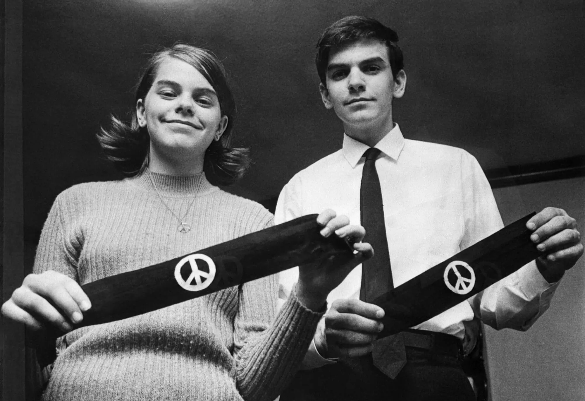
Tinker v. Des Moines Independent Community School District
Do public school students keep their First Amendment rights once they walk through the schoolhouse door?
- Argued
- November 12, 1968
- Vote
- 7–2
- Opinion
- Justice Abe Fortas
- Dissent
- Justices Black and Harlan
In December 1965 a handful of Des Moines students agreed to wear black armbands to school through the holidays—to mourn the dead on both sides in Vietnam and to back Robert Kennedy's call for a Christmas truce. Word reached the principals, who met and adopted a rule two days ahead: any student who wore an armband and refused to take it off would be suspended. John Tinker, fifteen, his sister Mary Beth, thirteen, and Christopher Eckhardt, sixteen, wore them anyway and were sent home. Their families sued.
Who argued it
- For the students
- Dan L. Johnston of Des Moines, backed by the Iowa Civil Liberties Union and the ACLU
- For the school district
- Allan A. Herrick of Des Moines
The pressure in this case runs the opposite way from the others on the list. Everywhere else the advocate presses an individual right against the state; here the Court's instinct was deference—schools had long stood in loco parentis, and the district warned that in a town that had already lost a former student in Vietnam, an armband could touch off a disturbance. Johnston's best precedent was West Virginia State Board of Education v. Barnette (1943), which had spared Jehovah's Witness children a compelled flag salute; but the hard part was never proving that students have rights—it was handing the Court a rule that would protect the armband without stripping principals of the authority they plainly need.
He got it. Justice Fortas wrote that students do not "shed their constitutional rights to freedom of speech or expression at the schoolhouse gate," and that officials may silence student expression only when it would "materially and substantially interfere with the requirements of appropriate discipline"—not on an undifferentiated fear of disturbance. Justices Black and Harlan dissented, Black warning of "a new revolutionary era of permissiveness." The "substantial disruption" test the Court announced that day still governs student speech.
You can listen to the argument here, or read the Petitioner's Brief (PDF). Do you think you can do better? Let's find out!
Argue the Case

Fantasy Moot sessions are generated by artificial intelligence. The questions are written to reflect each justice's documented judicial philosophy, but they are not quotations, and nothing said during a session represents the actual statement or opinion of any judge or court.